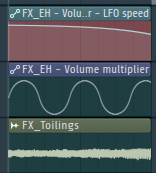
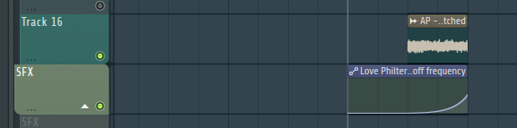

你可以下载并学习其中的内容，但不能用于商业用途！

为电子音乐制作人制定音乐创作策略（在线免费电子书） 我觉得值得一看
ableton 外国网站，可能访问很慢，请挂梯子访问！
我想使用开源软件httrack来克隆这个电子书的，但报错了，克隆不了
https://makingmusic.ableton.com/FutureBass Drop高潮部分示例：曲子出自FL Studio自带的曲子：Asher Postman - Future Bass (Stock Plugins Only)
乐曲解析
Drop部分的Lead使用的sytrus合成器，音色波形不复杂，基于锯齿波稍微改一下就行
Lead的音色参数1:一共使用了2个振荡器，都是锯齿波 2:使用了一个滤波器来调制Osc1和Osc2(第一个和第二个振荡器) 3：使用了FX功能
SawBass的音色：可以简单理解为高压电流的声音（确实有点像），一共是三个波形合成下面是截图
下面是截图
参数fst预制文件下载
 点我下载
点我下载
SawBass就相当于音乐的低频部分
这首演示曲子的主要乐器是三个Lead(中频),SawBass(低频)，Chords(和弦填充)
技术上用到了侧链压缩，使用kick来控制乐器的Atttack吧，具体可以自己打开FL研究
此外，还有一些细节，一些简短的fx音效,轨道名称叫做Random Sounds 随机声音
一种fx音色是用的LFO技术做成的，一共使用了两个包络线，一个是LFO包络线——控制的是音的响度，另外一个包络线控制的是LFO的速度（也可以理解为频率） 【比如说控制一个sin()三角函数的周期】
img下面是动态视频示例
简短的第二种音效，使用滤波器技术制作，低通滤波器，从低到高，然后时长较短
这是比较细节的东西，怎么说，感觉就属于那种装饰品的样子
这个就不录视频例子了，自己打开工程看，我截个图
总结，我没有过多的注重旋律和弦方面，更多的是技术，和结构方面，和弦是怎么一种规律，可以自己打开工程去看